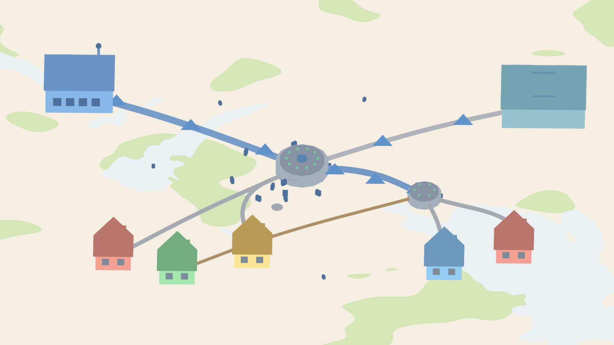
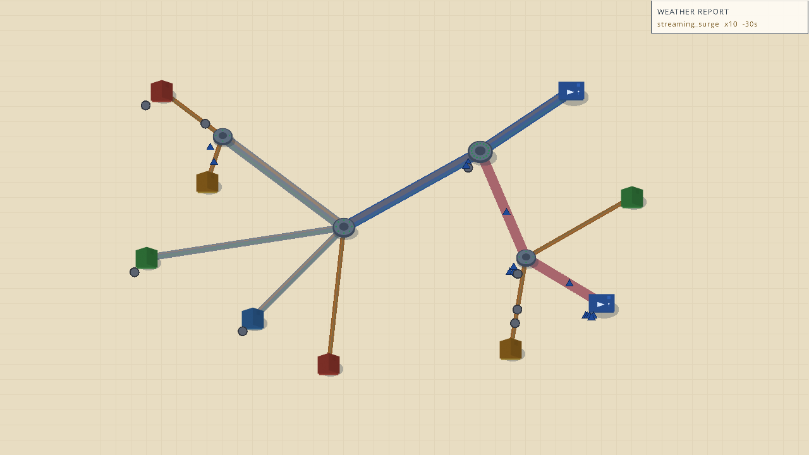
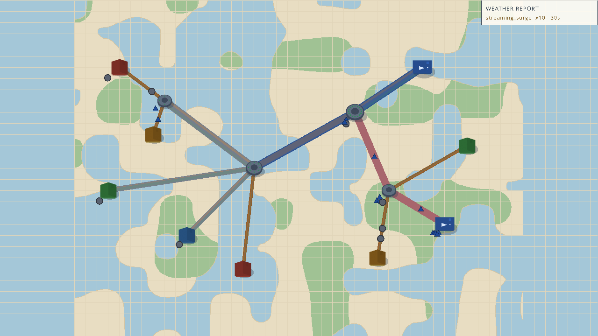
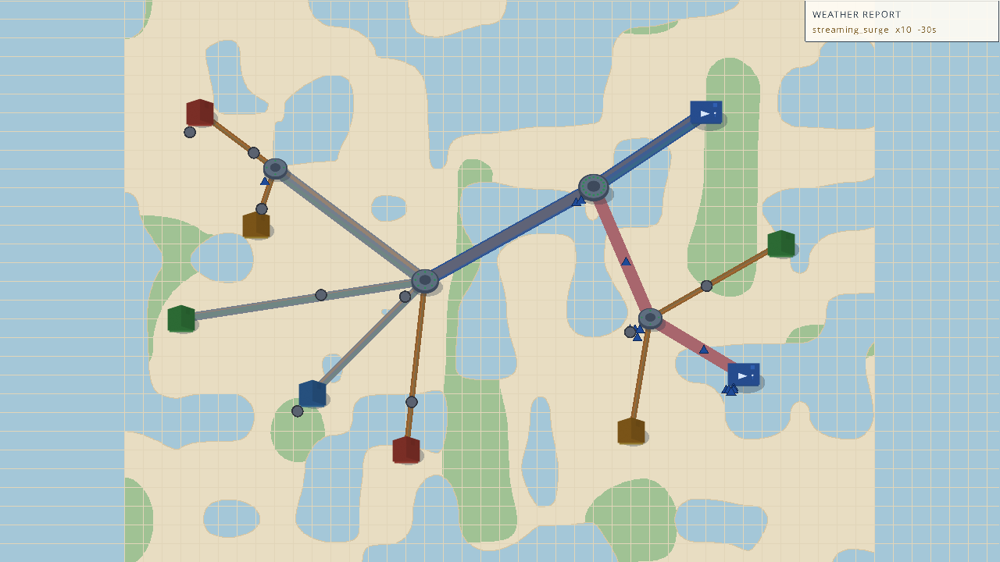
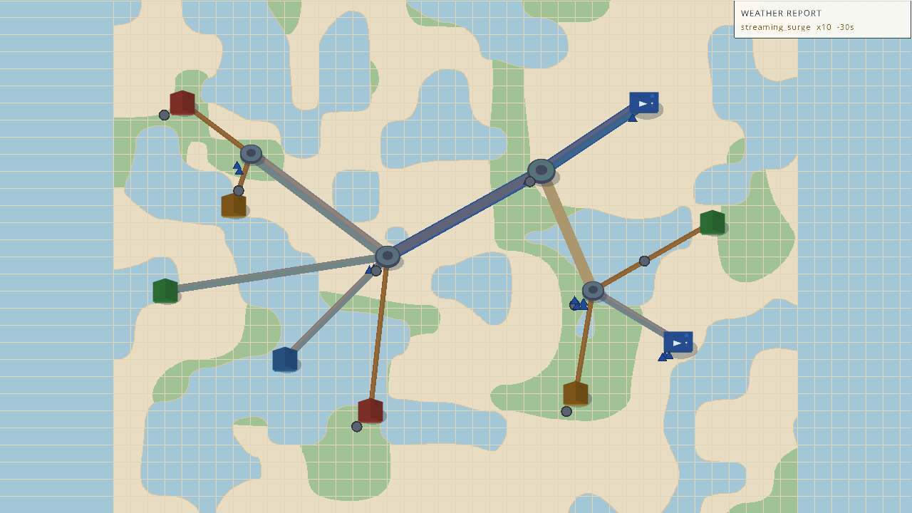

Story 7.4 replaces the flat cream void with a procedural land / ocean / parks map (look-book D9: "a map background, just like Mini Motorways", user verdict 2026-08-08). Below are three candidate map seeds — the SAME gameplay moment (the story-7.1 juice scene) rendered on each, side by side against the vista reference. Pick one (or annotate what to change: coastline style, water/park density, color balance, grid interaction).


Same scene (13 nodes, all pipe tiers, live traffic, HUD), three run seeds — each generates its own byte-stable map from the seed. Only the map differs.

Balanced mix: several mid-size landmasses with water fingers reaching in; the busiest coastline of the three.

Largest continuous landmass — the most "play surface" feel; water reads as inlets + a bay rather than open sea.

Few, bold landmasses with soft coastlines; parks cluster in the interiors. Closest to the vista's single-island read.
The generator: deterministic value noise from the run seed (same seed → byte-identical map), landmasses + a dilated-water sand band + coarse-noise park blobs. Presentation-only — no sim fields, T1/replay untouched. Palette tokens: water #A4C7D8 · coast #D5C5A3 · park #A0C294 · land = canvas #E8DDC2.